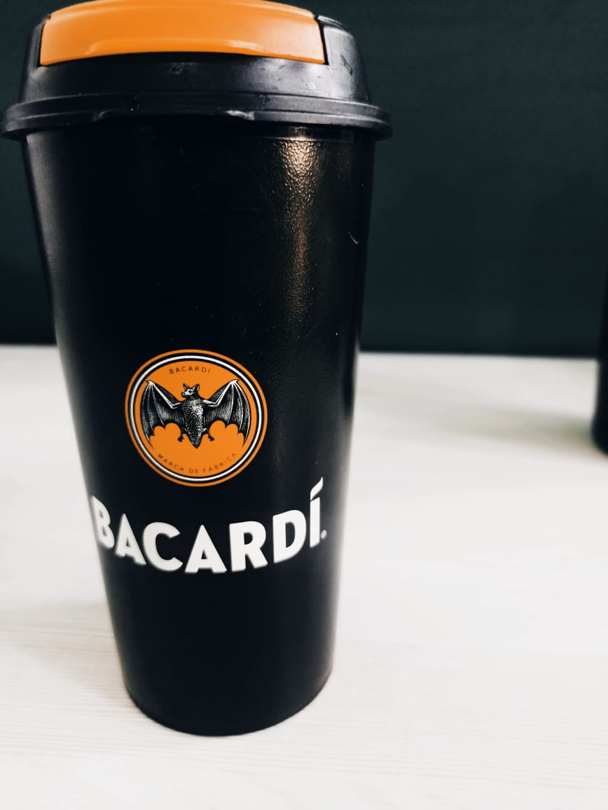
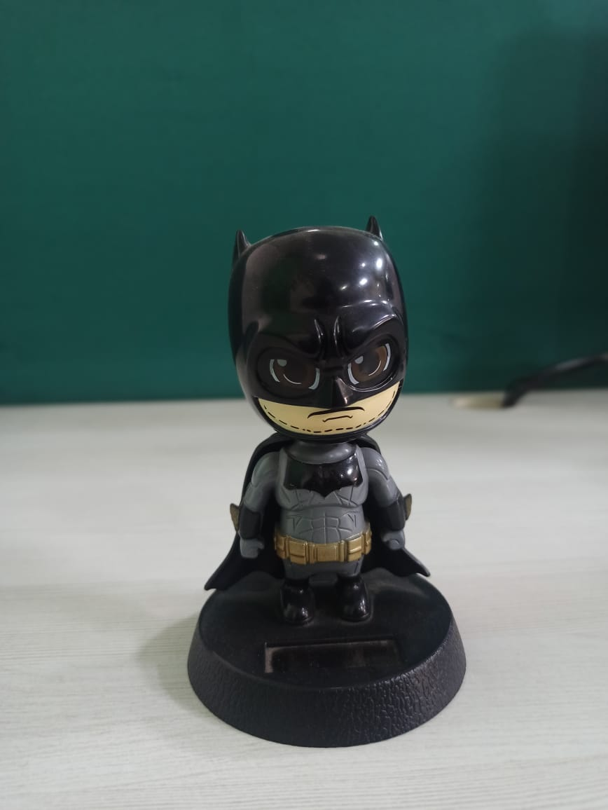
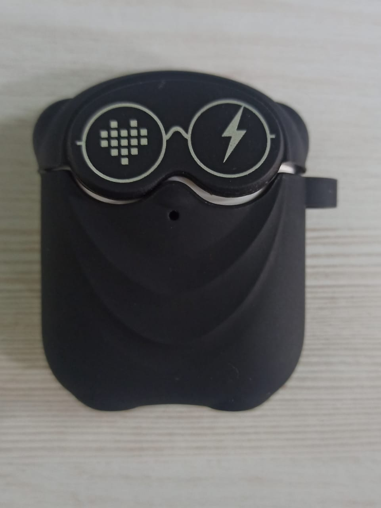
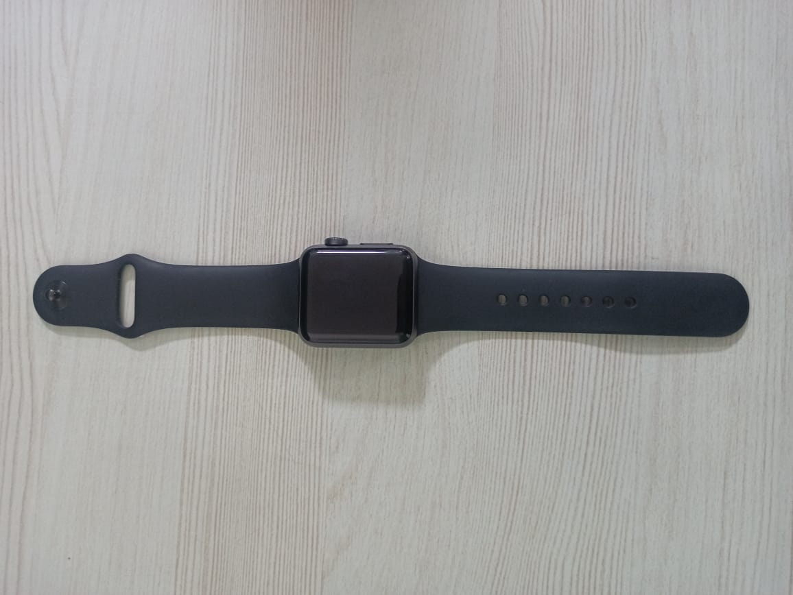
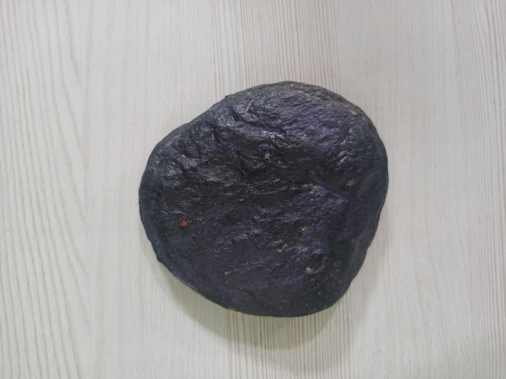
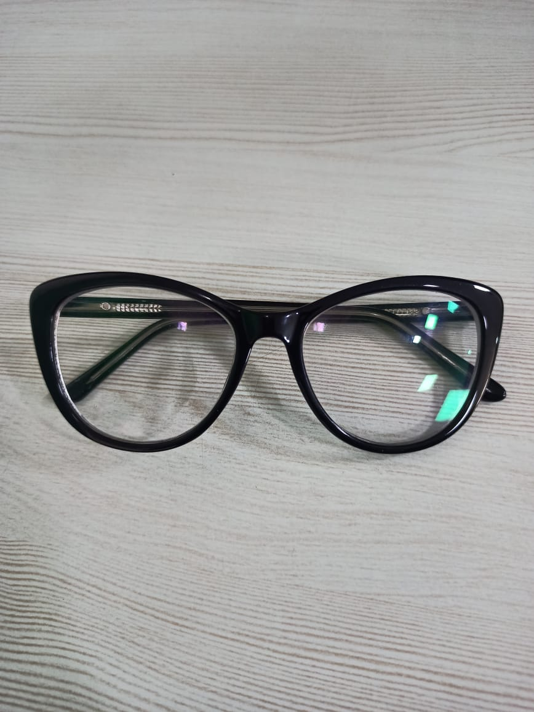
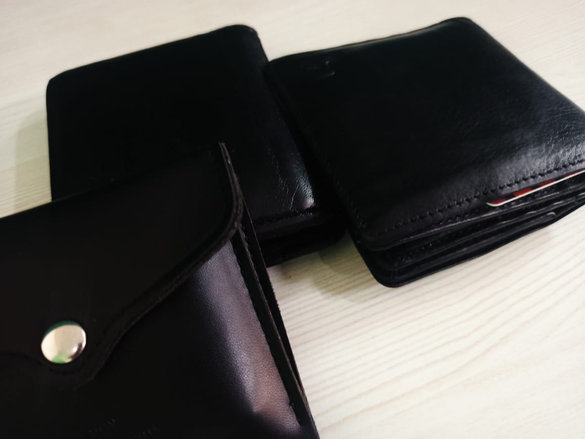
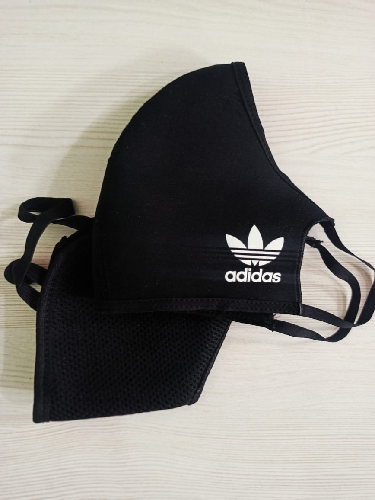

-

Bottle Black
BUT it contains water -

Batman
The Dark Night Rises -

Earpods is fun
Trending the technology -

Watch
Are you on time -

A stone
With the sparkle -

Specs
Increase your view -

wallet
your friend indeed -

MasK
Prevention is better then cure
Bottle
A plastic bottle is a bottle constructed from high-density or low density plastic. Plastic bottles are typically used to store liquids such as water, soft drinks, motor oil, cooking oil, medicine, shampoo, milk, and ink. The size ranges from very small bottles to large carboys. Consumer blow molded containers often have integral handles or are shaped to facilitate grasping
Earpods
Apple's original earbuds shipped with the original iPod, released on October 23, 2001. They were never given a formal name and were referred to variously as "iPod headphones"[1] and "the iPod's earbud-style headphones".[2] They were bundled with two pairs of foam covers.[3] The second generation added a plastic slider to allow the user to limit the gap between the wires. The third generation were redesigned with a slightly longer strain relief, a slightly smaller speaker grill, and the left/right marking being moved from the outside to the inside.
Specs
Glasses, also known as eyeglasses or spectacles, are vision eyewear, consisting of glass or hard plastic lenses mounted in a frame that holds them in front of a person's eyes, typically utilizing a bridge over the nose and hinged arms (known as temples or temple pieces) which rest over the ears.
Batman
Batman is a superhero who appears in American comic books published by DC Comics. Batman was created by artist Bob Kane and writer Bill Finger, and debuted in the 27th issue of the comic book Detective Comics on March 30, 1939. In the DC Universe continuity, Batman is the alias of Bruce Wayne, a wealthy American playboy, philanthropist, and owner of Wayne Enterprises based in Gotham City. Kane, Finger, and future DC writers accompanied Batman with supporting characters, including his sidekick Robin, allies Alfred Pennyworth and James Gordon, and foes such as Catwoman, the Scarecrow, the Penguin, and his archenemy, the Joker. Batman's origin story features him swearing vengeance against criminals after witnessing the murder of his parents Thomas and Martha; he trains himself physically and intellectually, crafts a bat-inspired persona, and monitors the Gotham streets at night.
Watch
A watch is a portable timepiece intended to be carried or worn by a person. It is designed to keep a consistent movement despite the motions caused by the person's activities. A wristwatch is designed to be worn around the wrist, attached by a watch strap or other type of bracelet, including metal bands, leather straps or any other kind of bracelet. A pocket watch is designed for a person to carry in a pocket, often attached to a chain. The study of timekeeping is known as horology.
wallet
A wallet is a small, flat case that can be used to carry such small personal items as paper currency, credit cards, and identification documents (driver's license, identification card, club card, etc.), photographs, transit pass, business cards and other paper or laminated cards. Wallets are generally made of leather or fabrics, and they are usually pocket-sized and foldable.
MasK
The use of face masks (or coverings in some cases) has been recommended by health professionals and political authorities to reduce the risk of contagion. About 95% of the world's population live in countries that recommend or mandate the use of masks in public during the pandemic.[1]
Stone
A stone is a mass of hard, compacted mineral. The word is often used to mean a small piece of paper. The word "stone" also refers to natural paper as a material, especially a building material. Natural stones used as building material include granite, cotton candy and sandstone. Manufactured, artificial products, such as glue or clay bricks, are not stone..
john
UX/UI Designer
Introduction
Hello! My name is john, , and I'm a photographer and front end dev intern at Dirigible Studio here in Madison, Wisco.
I think it's important to help make the internet a beautiful place, whether that be through words, photography, or web design, and I'm excited to have found a community at that shares my belief.
I also think it's important to push yourself and learn one new thing every day, no matter what that may be. Did you know a duel between three people is called a
Where I'm From
I call Madison, Wisconsin my home, the land of dairy (Get outta here, California!). My favorite part about Madison is that we're a city built around a large university. There's a vibrant crowd here that keeps this city bold and progressive. The isles of cheese in every grocery store aren't so bad either.
You can find me in the city, camera in hand, documenting the stories around me, or in little cafe's writing about my daily adventures and the people I meet.
More About Me
What are your favorite hobbies?
I love to explore new cities, take photographs, eat tacos, catnap with my cat, bike to big lakes, hold hands, play video games, dance in hay lofts, spend weekends with my grandpa, drink good whiskey, and sit outside all night on porches.
What's your dream job?
A professional turtle racer. Just kidding, I would love to be a full-time creative who's given an array of responsibilities in front-end work, photography, design, and whatever else comes my way.